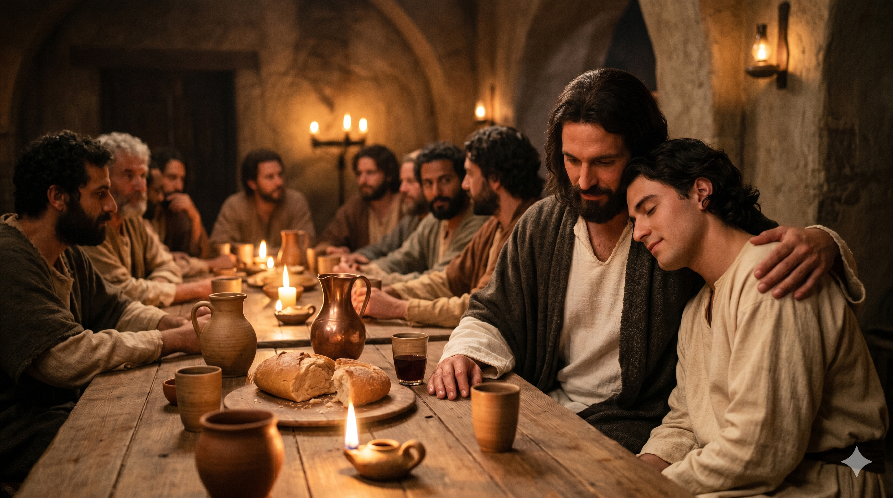

노년의 요한이 등잔 아래 첫 번째 편지를 써 내려가는 장면 — 수십 년 전 직접 들었고, 보았고, 손으로 만졌던 그분을 기억하며
"태초부터 있는 생명의 말씀에 관하여는 우리가 들은 바요 눈으로 본 바요 자세히 보고 우리의 손으로 만진 바라 … 우리가 보고 들은 바를 너희에게도 전함은 너희로 우리와 사귐이 있게 하려 함이니 우리의 사귐은 아버지와 그의 아들 예수 그리스도와 더불어 누림이라" — 요한일서 1:1, 3
요한일서는 노년의 사도 요한이 쓴 편지입니다. 첫 문장부터 숨이 막힐 정도로 강렬합니다. "태초부터 있는 생명의 말씀에 관하여는 우리가 들은 바요 눈으로 본 바요 자세히 보고 우리의 손으로 만진 바라." 세 개의 감각 — 청각, 시각, 촉각 — 을 모두 동원합니다. 이것은 단순한 수사적 표현이 아닙니다. 요한은 당시 교회 안에 퍼지던 이단 사상, 즉 예수님이 진짜 육체를 가지지 않으셨다는 영지주의적 가르침을 반박하기 위해 이 말을 쓴 것입니다. "나는 그분을 직접 만졌습니다. 그분은 실재하셨습니다."
요한이 이 편지를 쓸 당시 그는 이미 초대 교회의 마지막 살아있는 목격자였습니다. 베드로도, 바울도, 야고보도 순교했습니다. 요한 홀로 남아 예수님을 직접 경험한 세대를 잇는 마지막 다리였습니다. 그 무게감이 이 짧은 서론에 고스란히 담겨 있습니다. 그는 "내 말을 믿으라"고 하지 않습니다. "내가 들었고, 보았고, 만졌다"고 합니다. 그리고 그 목격을 전하는 이유는 오직 하나입니다. 편지를 읽는 사람들도 자신과 같이 하나님 아버지와 그 아들 예수 그리스도와의 사귐 속으로 들어오게 하려는 것입니다. 복음 전도는 결국 사귐으로의 초청입니다.

최후의 만찬 자리에서 예수님 품에 기대어 앉아 있던 젊은 요한 — 그 온기와 숨결을 수십 년 뒤에도 기억하며 편지에 담다
요한의 증언은 우리 신앙의 기초가 얼마나 견고한지를 일깨워 줍니다. 우리가 믿는 예수님은 신화 속 인물이 아닙니다. 역사 속에서 실제로 사셨고, 실제로 죽으셨고, 실제로 부활하신 분입니다. 그분을 직접 만진 사람이 쓴 편지가 지금 우리 손에 있습니다. 신앙이 흔들릴 때, "내가 믿는 이것이 정말 사실인가?"라는 의심이 찾아올 때, 이 본문으로 돌아오십시오. 요한의 손이 느꼈던 그 실체가 오늘도 우리와 함께 계십니다. 요한이 기뻐했던 그 기쁨이 우리 것이기도 합니다.
요한이 이 편지를 쓴 목적은 4절에 분명하게 나옵니다. "우리가 이것을 씀은 우리의 기쁨이 충만하게 하려 함이라." 복음의 증거는 의무감이 아니라 기쁨에서 나옵니다. 요한은 수십 년이 지나도록 예수님을 기억하는 것이 여전히 기뻤습니다. 그 기쁨이 넘쳐서 글이 되었습니다. 우리의 신앙 이야기도 마찬가지여야 합니다. 예수님을 만난 것이 진짜 기쁨이라면, 그 이야기는 저절로 흘러나오게 되어 있습니다. 오늘 당신에게 예수님은 들은 이야기입니까, 아니면 직접 경험한 실재입니까?
요한은 수십 년이 지나도 예수님의 온기를 기억했습니다.
그 기억이 편지가 되고, 편지가 교회가 되었습니다.
당신도 예수님을 경험한 사람입니다.
그 이야기를 오늘 한 사람에게 전해 보십시오.